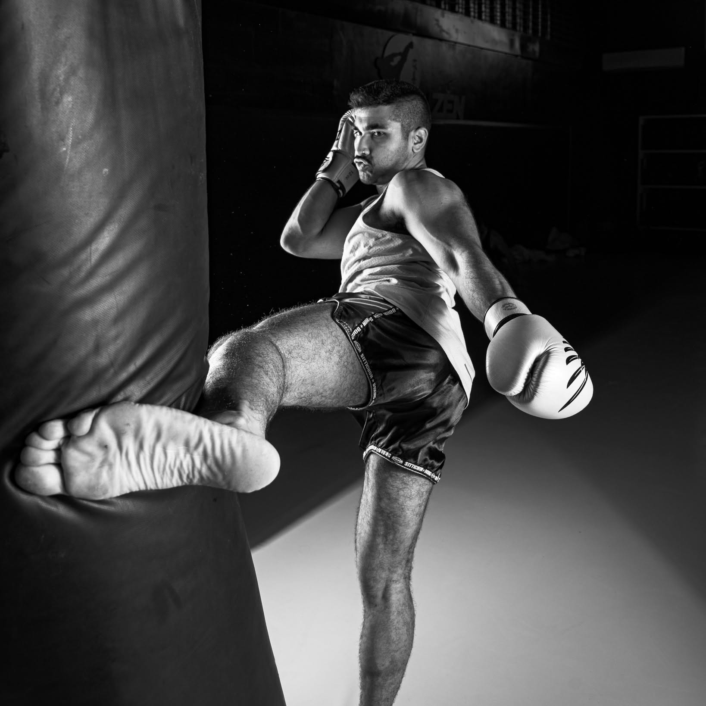
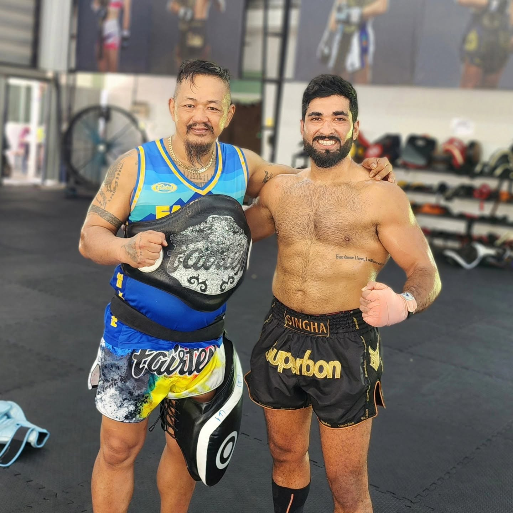
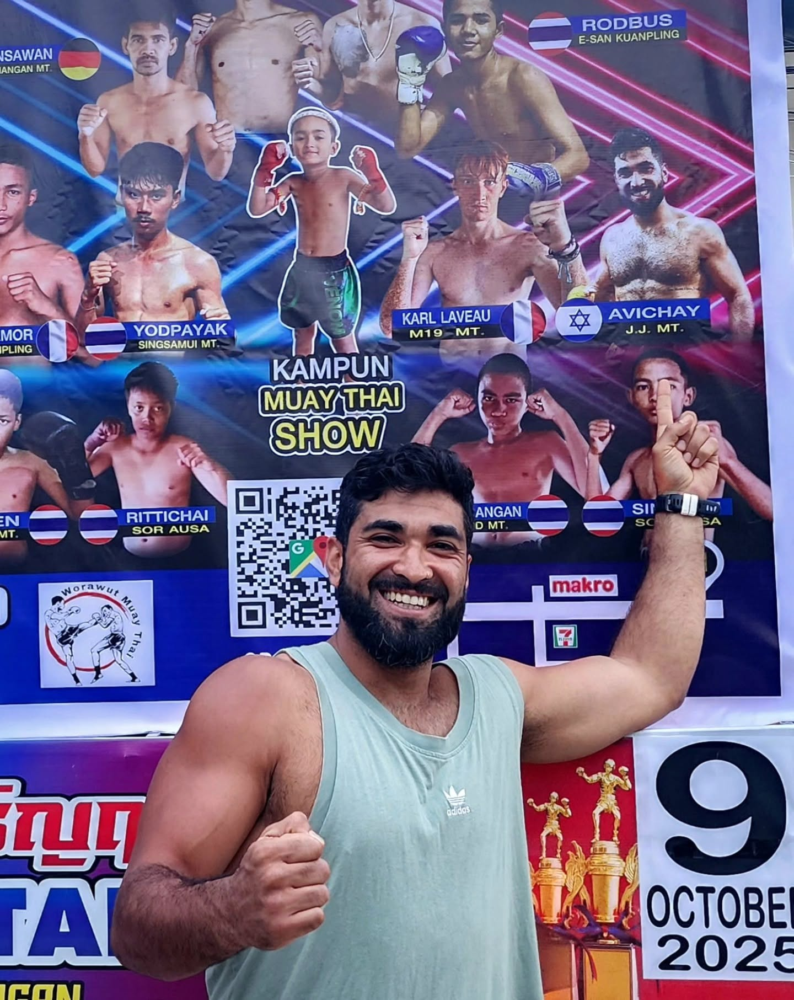
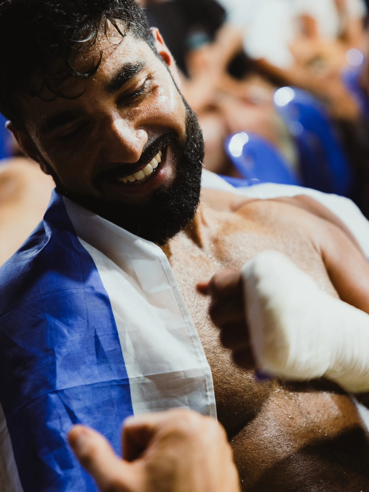
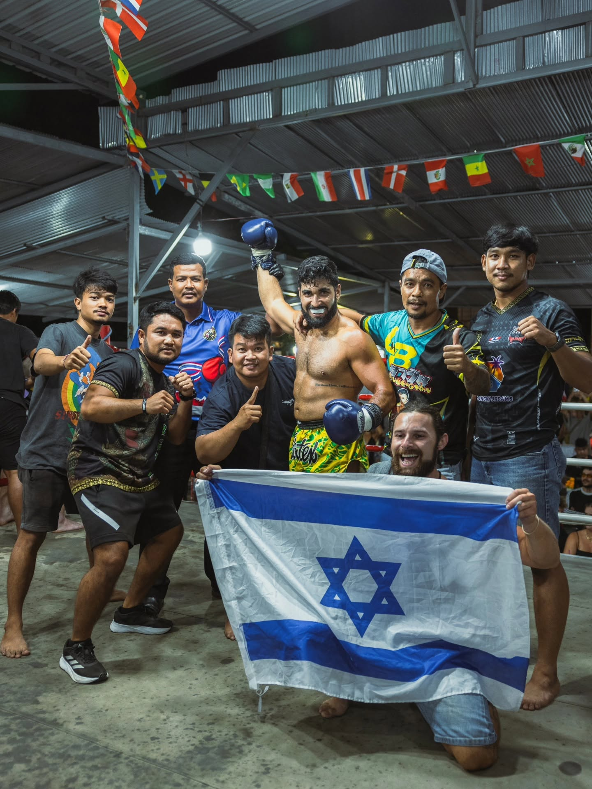
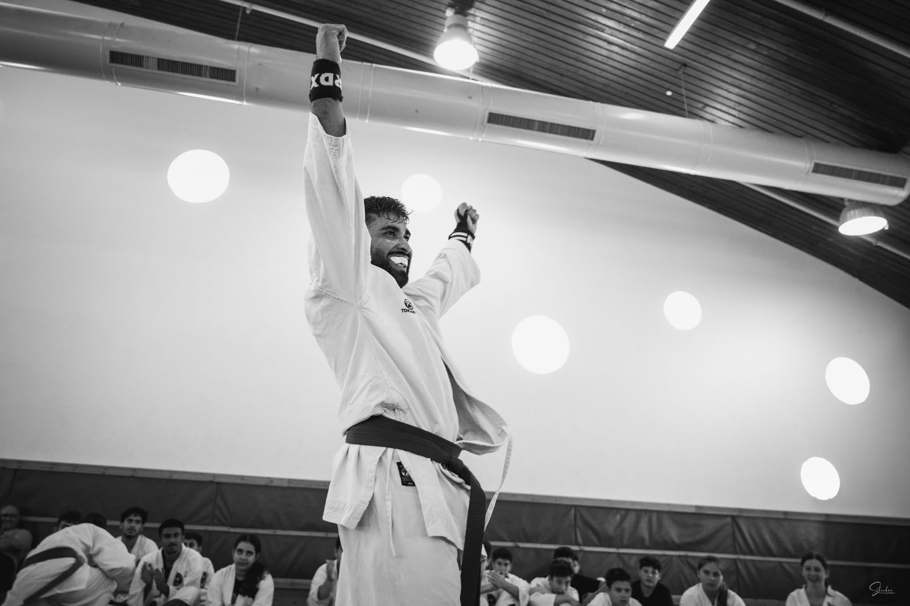
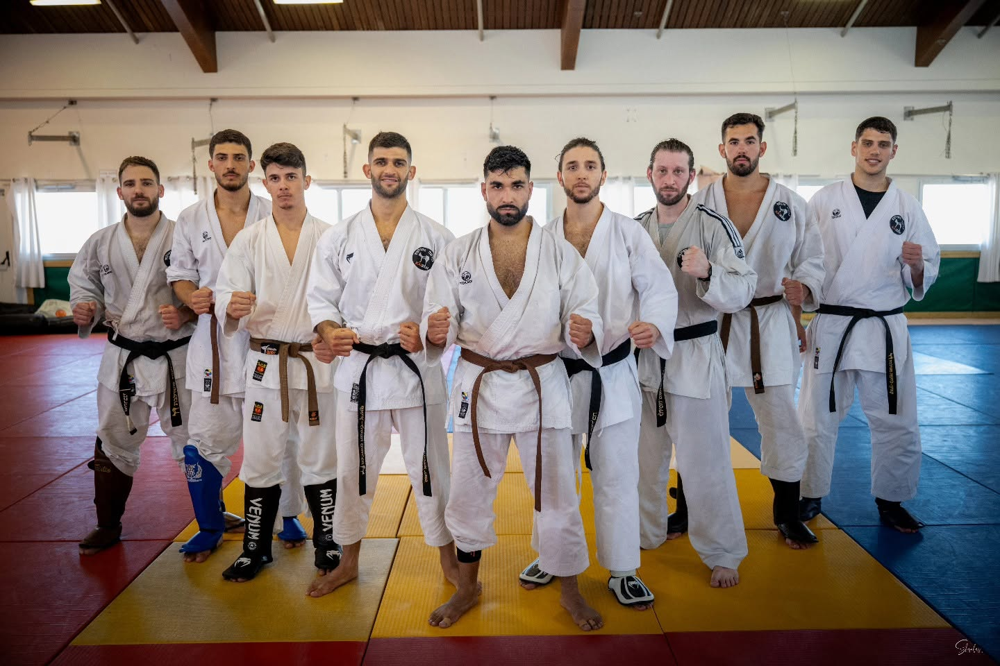
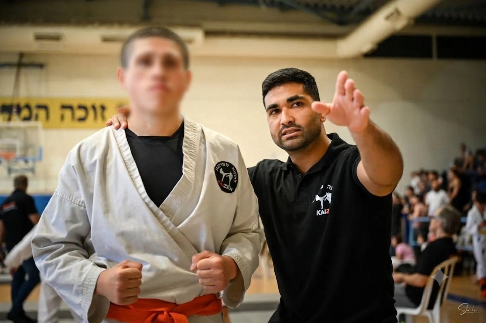
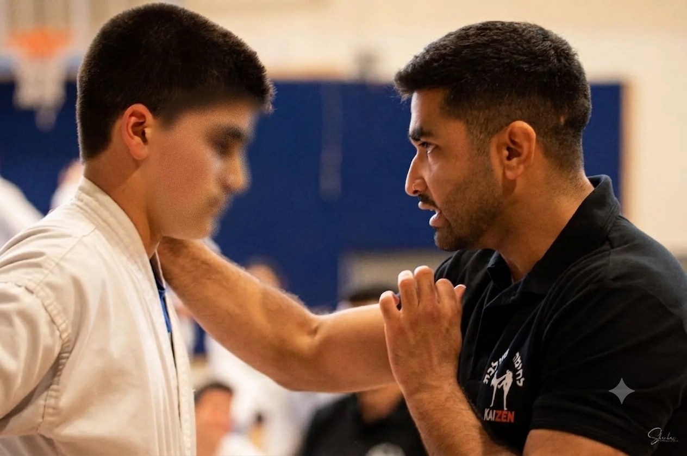

משמעת
להגיע לאימון גם כשקשה. לחזור על תנועה אלף פעם עד שהיא מושלמת. המשמעת היא הבסיס לכל התקדמות.
איגרוף תאילנדי וקראטה הם לא תחביב בשבילי — הם דרך חיים. שנים של אימונים, קרבות והוראה עיצבו את מי שאני: כלוחם, כמאמן, וכפיזיותרפיסט.
כמאמן איגרוף תאילנדי וקראטה, אני מלמד הרבה יותר מטכניקה. אומנויות הלחימה הן בית ספר לחיים — וכל ערך שנרכש בזירה מחלחל לכל תחום אחר.
להגיע לאימון גם כשקשה. לחזור על תנועה אלף פעם עד שהיא מושלמת. המשמעת היא הבסיס לכל התקדמות.
עוצמה בלי שליטה היא בזבוז. בזירה לומדים לכוון כל גרם של כוח בדיוק לאן שצריך — ומתי לעצור.
כל בעיטה מתחילה מרגל יציבה אחת. שיווי משקל הוא לא מתנה — הוא מיומנות שמתאמנים עליה.
הביטחון האמיתי לא בא מלנצח יריב — הוא בא מלדעת שאתה מסוגל לעמוד מול כל אתגר.
להרגיש כל שריר, כל נשימה, כל שינוי משקל. הקשב לגוף הוא כלי שמשרת אותך לכל החיים.
לספוג מכה, לקום ולהמשיך. החוסן שנבנה בזירה הוא בדיוק מה שנדרש גם בתהליך שיקום.
אביחי בזירה — איגרוף תאילנדי









כל מה שהזירה לימדה אותי — משמעת, שליטה, איזון, ביטחון וחוסן — הפך לכלי טיפולי בשיטת TheraFist. כשמטופל לובש כפפות, הוא מפסיק להיות ״פצוע״ ומתחיל להיות לוחם בקרב על ההחלמה שלו.